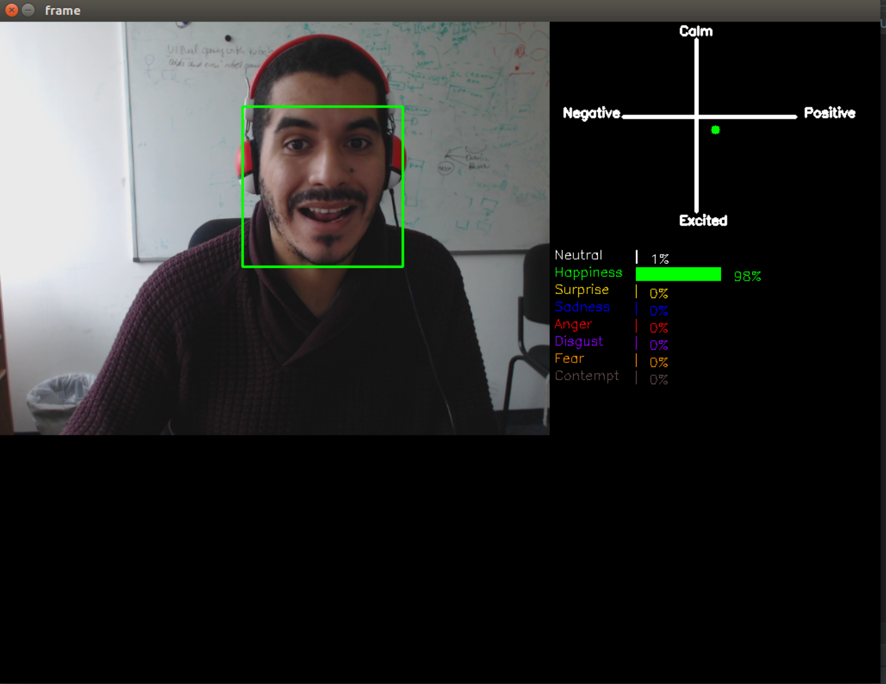

Welcome to FaceChannel’s documentation!
This project aims at providing a ready-to-use solution for facial expression recognition. The models available here are free to be used for personal and academic purpose.
Acknowledgment
This environment and all its development is supported by a Starting Grant from the European Research Council (ERC) under the European Union’s Horizon 2020 research and innovation programme. G.A. No 804388, wHiSPER.